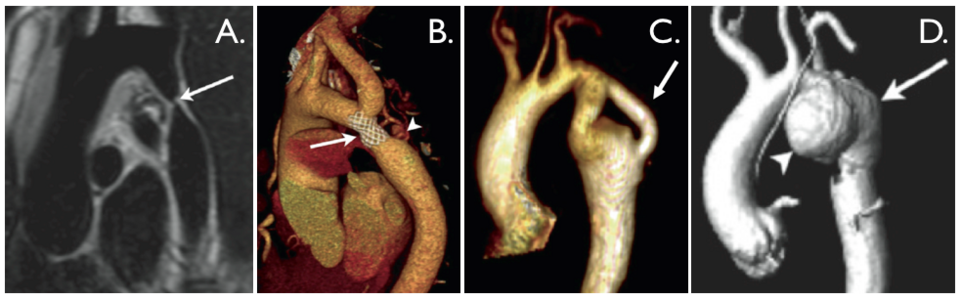

Ficha del catálogo
Coartación aórtica
- Sistema
- Cardiovascular
- Modalidad
- RM
- Región
- Tórax
- Dificultad
- Avanzado
Es un estrechamiento congénito de la aorta torácica, localizado con mayor frecuencia en la región yuxtaductal distal al origen de la subclavia izquierda. Produce hipertensión en los miembros superiores con pulsos femorales débiles y gradiente de presión entre extremidades. Se asocia con frecuencia a válvula aórtica bicúspide y a síndrome de Turner.
Técnica
La resonancia magnética con angiografía y secuencias de contraste de fase permite definir la anatomía, medir el gradiente y cuantificar el flujo colateral sin radiación, lo que la hace ideal para el seguimiento a largo plazo. La angiotomografía es una alternativa rápida en el paciente inestable o con dispositivos incompatibles. La radiografía de tórax puede sugerir el diagnóstico en el adulto.
Qué observar
- Sitio, longitud y diámetro mínimo del segmento estenótico
- Relación con el origen de la arteria subclavia izquierda y con el ligamento arterioso
- Dilatación postestenótica de la aorta descendente
- Circulación colateral por arterias intercostales y mamarias internas
- Hipertrofia ventricular izquierda y válvula aórtica bicúspide asociada
- Aneurismas o seudoaneurismas en reparaciones previas
Hallazgos
Se identifica un estrechamiento focal en la región del istmo aórtico con dilatación postestenótica y vasos colaterales tortuosos y dilatados. En el contraste de fase el flujo en la aorta descendente muestra un chorro acelerado con aumento del flujo en diástole y ganancia de caudal entre el segmento proximal y el distal, reflejo del aporte colateral. En radiografía simple aparecen muescas costales y el signo de la cifra tres en el contorno aórtico.
Perlas
En el adulto las muescas en el borde inferior de los arcos costales posteriores, producidas por arterias intercostales dilatadas, son un signo indirecto muy específico (su ausencia no descarta la lesión, pero su presencia obliga a estudiar la aorta torácica con detalle).
Diagnóstico diferencial
- Seudocoartación
- Existe elongación y acodamiento del istmo sin gradiente significativo ni circulación colateral.
- Arteritis de Takayasu
- Hay engrosamiento parietal circunferencial con estenosis largas en varios troncos y marcadores inflamatorios elevados.
- Interrupción del arco aórtico
- Existe una discontinuidad completa entre los segmentos aórticos, con presentación neonatal grave.
- Reestenosis tras reparación
- El estrechamiento se sitúa en el sitio quirúrgico y se acompaña de material protésico o cambios posquirúrgicos.
Simuladores
- Acodamiento del istmo aórtico sin repercusión hemodinámica
- Ductus arterioso persistente cerca del istmo
- Artefacto de flujo en la aorta descendente en secuencias de sangre negra
Por modalidad
- TC
- Define con detalle el calibre, las calcificaciones y las colaterales de manera rápida en el paciente agudo.
- US
- El ecocardiograma con supraesternal muestra el chorro acelerado y el flujo diastólico continuo en la aorta descendente.
Protocolo
Resonancia torácica con secuencias de sangre negra sincronizadas, angiografía con contraste y contraste de fase perpendicular a la aorta ascendente, al istmo y a la descendente a nivel diafragmático. Se calcula el flujo diferencial para estimar la contribución colateral. Se completa con cine para valorar la válvula aórtica y la función ventricular.
Clasificación
Se describe según su relación con el ligamento arterioso en preductal, yuxtaductal y posductal, siendo la yuxtaductal la más habitual en el adulto. También se distingue la coartación nativa de la reestenosis tras cirugía o tratamiento endovascular, con implicaciones terapéuticas distintas.
Errores frecuentes
- Confundir seudocoartación con estenosis significativa
- No cuantificar el gradiente ni el flujo colateral en el seguimiento
- Pasar por alto la válvula aórtica bicúspide asociada

coartación aorta istmo muescas costales cardiopatía congénita resonancia colaterales